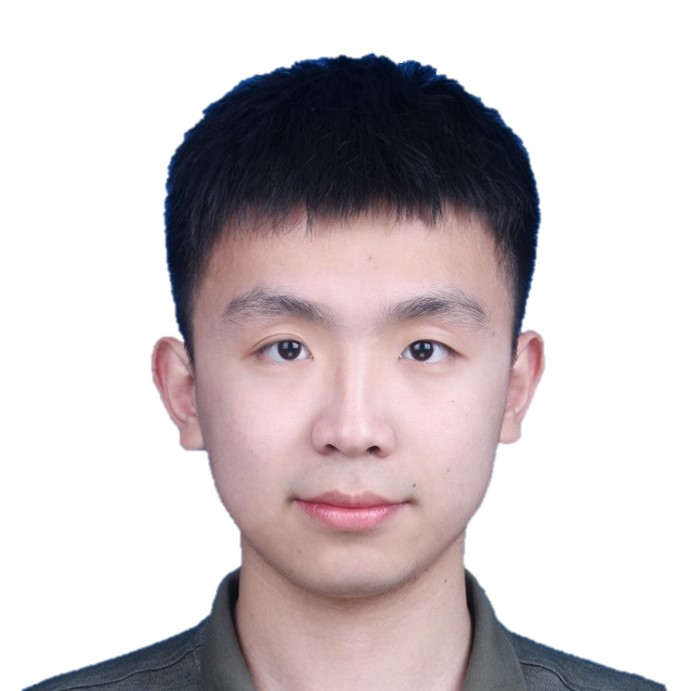

|
Hesheng Sun
|

|
*Basic Public Information
Science Enthusiast/Algorithm Engineer/Researcher
Phd's degree of Distributed System & Artificial Intelligence
[Nanjing | Shanghai | Hangzhou], China
hesheng.sun{@smail.nju.edu.cn|@gmail.com}
|
Biography
From the snow-laced forests of China's Northeast that first shaped my spirit, to the boundless horizons of the Northwest where I earned my Bachelor's degree (2020), and now to the mist-kissed mountains of the Southeast where I pursue my Doctoral crown (2025) – my life has been a compass tracing knowledge across this ancient land.
Between equations and epiphanies, I follow an older rhythm: the whisper of train tracks leading to untrodden villages, the salt-stained air of coastal towns at dawn, the silent language of star-strewn deserts. Each journey stitches new threads into my research – for what is scholarship but humanity's grand expedition against ignorance?
In laboratories and lonely roads alike, I seek the same truth: that every frontier crossed (whether in data or distant valleys) reveals not just the world's hidden patterns, but the uncharted cartography of one's own mind.
Research
Artificial Intelligence: Image Classification, Reinforcement Learning, Object Tracking, etc. Distributed System: Machine Learning System, Inference acceleration, System Optimization,
Language Models, etc. Optimization: Queueing Theory, Game Theory, Lyapunov Optimization, Predict+Optimize, etc. Key words: Python, CNN, Transformer, RNN, RL, Vllm, Pytorch, Optimize, Inference, etc.
News
Others +∞, Selected listed 2025 - 1 paper accepted to Computer Networks (CN). 2025 - 1 paper accepted to TMC. 2025 - 1 paper accepted to MM. 2025 - 1 paper accpeted to International Symposium on Quality of Service (IWQoS). 2025 - 1 paper accepted to Computer Networks (CN). 2024 - 1 paper accepted to Computer Networks (CN). 2024 - 1 paper accepted to INFOCOM. 2023 - 1 paper accepted to International Conference of Parallel Processing (ICPP). 2022 - 1 paper accepted to Journal of Aystem Architecture (JSA). 2022 - First Prize in Jiangsu "Internet Plus" Competition (🥇 Prize).
|